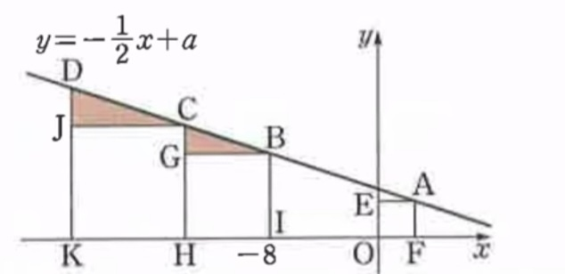

다음 그림과 같이 일차함수 y = -1/2x+a의 그래프 위의 네 점 A, B, C, D에 대하여 세 사각형 AEOF, BGHI, CJKH는 정사각형이다. 점 B의 x좌표가 -8이고 사각형 AEOF의 둘레의 길이가 8/3일 때, 두 삼각형 BCG, CDG의 넓이의 합이 a/b일때 a + b의 값을 아스키코드로 변환하여https://dloi89f.github.io/여기/에 대입하시오 예) https://dloi89f.github.io/848575963673/
